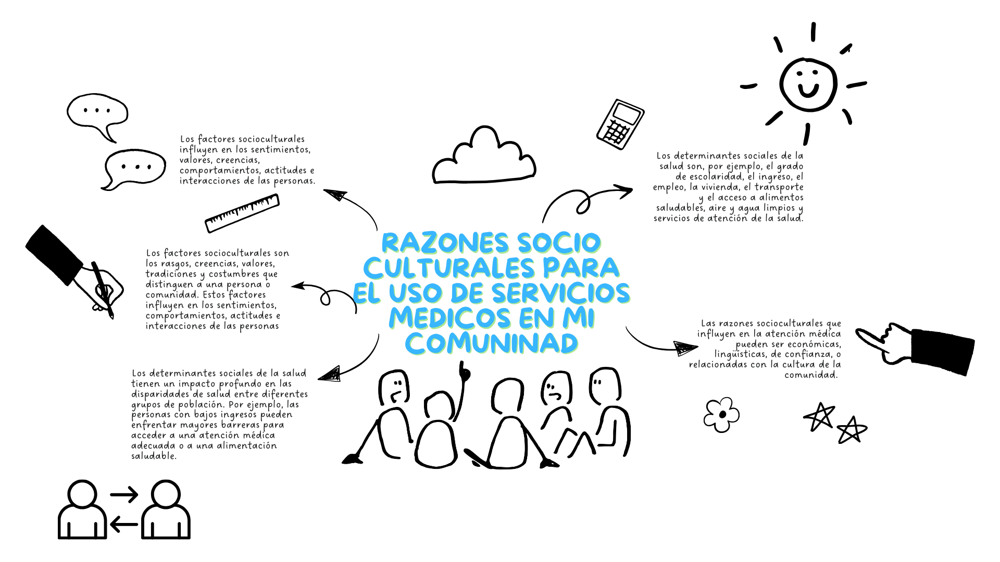

Ámbito: Practica y Colaboración Ciudadana
Categoría: Salud y sociedad
Numero de progresión: 3
Descripción de la progresión: Analiza como las condiciones socioculturales y las relaciones interculturales son factores determinantes en la salud integral de las personas, familias y comunidades, reconociendo la diversidad de servicios de salud en su contexto.
Descripción de la progresión: Analiza como las condiciones socioculturales y las relaciones interculturales son factores determinantes en la salud integral de las personas, familias y comunidades, reconociendo la diversidad de servicios de salud en su contexto.
Ámbito: Practica y Colaboración Ciudadana
MAPA MENTAL
Las condiciones socioculturales y las relaciones interculturales son factores determinantes en la salud de las personas y comunidades. La diversidad cultural debe ser entendida y respetada dentro de los sistemas de salud, para asegurar que cada persona pueda recibir atención adecuada a sus necesidades. La integración de las diferentes formas de conocimiento, tanto tradicionales como modernas, y la creación de políticas de salud que fomentan la inclusión y el respeto, para lograr una atención equitativa y efectiva. Solo reconociendo esto podremos garantizar una salud más justa y accesible para todos.

